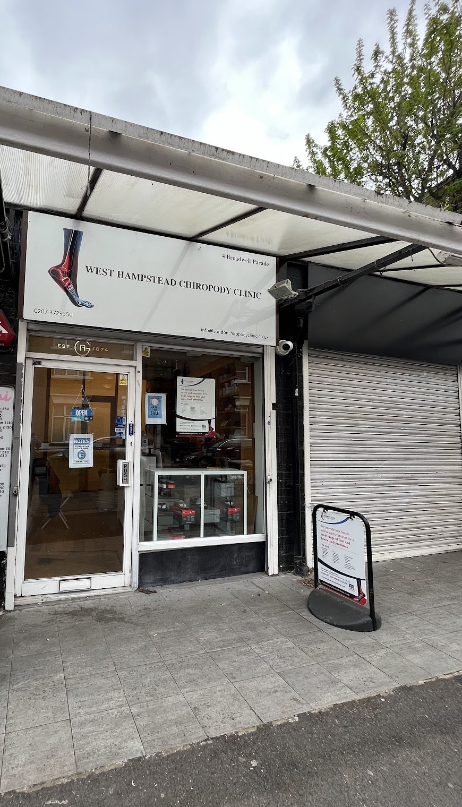

Get in touch
Contact & booking
We take bookings by phone and email — call your nearest clinic directly, or email us and we’ll get back to you.
Quick summary
Opening hours at a glance
| Day | West Hampstead |
|---|---|
| Tue | 10:00–13:30 |
| Wed | 14:00–18:00 |
| Thu | 15:00–19:00 |
| Fri | 10:00–18:00 |
| Sat | 14:00–17:30 |
| Day | Tottenham |
|---|---|
| Mon | 09:00–19:00 |
| Sat | 09:00–13:00 |
